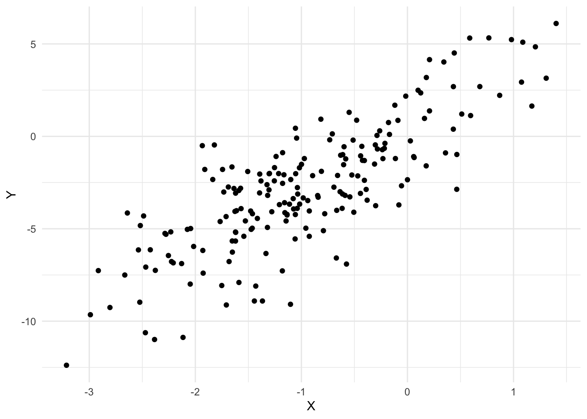
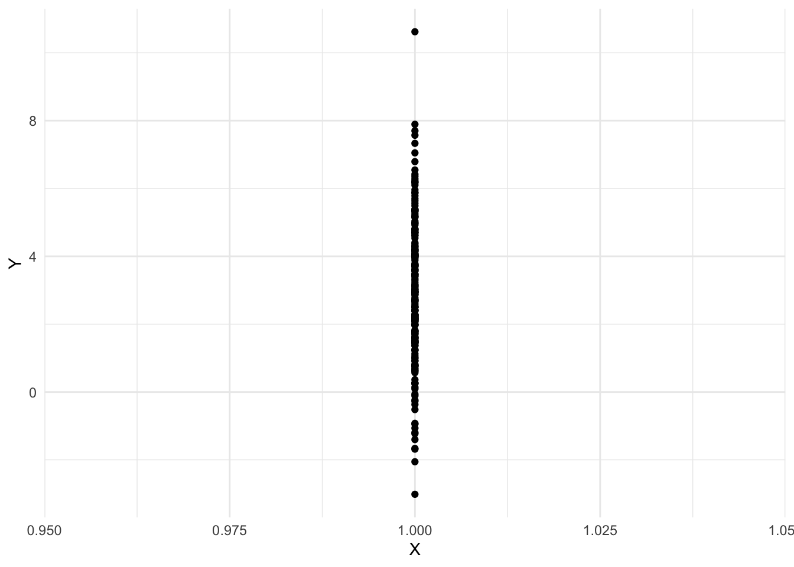

Note: we can make nice graphs using the ggdag package to plot graphs.
Graph: \(X \rightarrow Y\)
Original world
library(tidyverse)theme_set(theme_minimal())set.seed(1)n <-200# Step 1: Generate variables with no parentsf_X <-function(noise) noise -1noise_X <-rnorm(n)X <-f_X(noise_X)# Step k+1: Generate variables that had their# set of parents finish generating at step kf_Y <-function(x, noise) 3* x +2* noisenoise_Y <-rnorm(n)Y <-f_Y(X, noise_Y)qplot(X, Y)

Sample average of Y:
mean(Y)
[1] -2.812106
World after intervention
We start by copying and pasting the original code, then we modify the program to change some variable. In this case we do an “atomic” intervention setting all \(X\) values to 1.
Since the code is written in a way that any variables depending on \(X\) (in this graph \(Y\) does) are generated after \(X\), this intervention on \(X\) may change their distributions as well.
# Step 1: Generate variables with no parentsX <-1# Step k+1: Generate variables that had their# set of parents finish generating at step kf_Y <-function(x, noise) 3* x +2* noisenoise_Y <-rnorm(n)Y <-f_Y(X, noise_Y)qplot(X, Y)

Sample average of Y:
mean(Y)
[1] 2.916346
Explanation
With this simple data generating process we can see that \(X \sim N(-1, 1)\) and \((Y | X = x) \sim N(3x, 4)\). By linearity, \(E[Y] = 3E[X] = -3\) in the original world. But after the intervention \(\text{do}(X := 1)\), we have \(E[Y] = 3 E[1] = 3 \cdot 1 = 3\).
Graph: \(X \leftarrow U \rightarrow Y\)
Original world
n <-10000# reduce sampling variability# Step 1: Generate variables with no parentsU <-rnorm(n)# Step k+1: Generate variables that had their# set of parents finish generating at step kf_X <-function(u, noise) 2* u +3+ noisenoise_X <-rnorm(n)X <-f_X(U, noise_X)f_Y <-function(u, noise) u^2+ noise^2noise_Y <-rnorm(n)Y <-f_Y(U, noise_Y)
Sample average of Y:
mean(Y)
[1] 2.030961
World after intervention
An “atomic” intervention setting all X values to 1.
# Step 1: Generate variables with no parentsU <-rnorm(n)# Step k+1: Generate variables that had their# set of parents finish generating at step kX <-1f_Y <-function(u, noise) u^2+ noise^2noise_Y <-rnorm(n)Y <-f_Y(U, noise_Y)
Sample average of Y:
mean(Y)
[1] 2.032377
Explanation
In this case the mean of \(Y\) did not change because the variable we intervened on, \(X\), is not a cause of \(Y\).